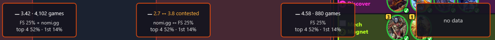
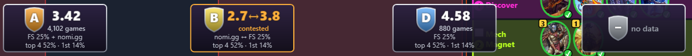
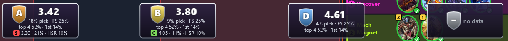
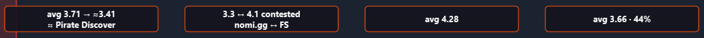
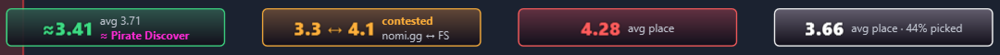
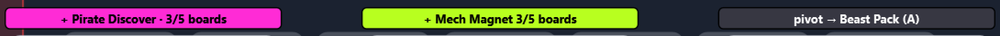
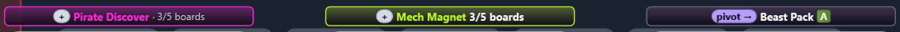
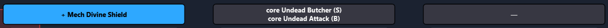
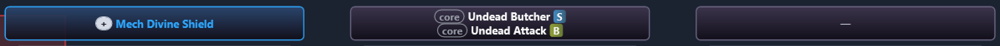
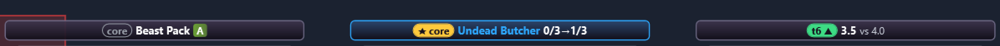

Les notes des héros et des choix
Ali : « l'écran de sélection des personnages (et les indications de trinkets/découvertes etc.) offrent de bonnes informations mais celles-ci ne sont ni sexy, ni ergonomiques. Regarde celle de [l'écran de choix du héros du jeu]. Les couleurs, les notes, c'est meilleur. Refonte. » — Le jeu montre l'armure d'un héros en gros chiffre blanc cerné de noir dans un blason d'argent. Les encarts et les étiquettes font désormais pareil : une note qui se lit d'un coup d'œil, grosse et colorée, puis le détail en petit. Les boîtes ne bougent pas, rien n'est perdu, rien n'est calculé autrement : seul le dessin change.
HeroPickLayout et ChoiceLayout intacts1. Avant, après
Captures de la simulation (tools/BronzebeardHud.Harness, 1920 × 1080), agrandies deux fois sur la zone concernée.
Les captures entières sont dans img/2026-10-11-notes/.
Héros proposés


Avant, la lettre de tier était un tiret : quatre héros inventés, c'est trop peu pour que HeroTiers en calcule une
(il en veut 20) ; la simulation leur donne maintenant les tiers A, B, D, comme un vrai fichier. Le quatrième encart passe sous le
panneau « Compositions » à sa place par défaut — c'était déjà le cas, et c'est à la disposition du joueur de l'éviter.

--heroes-sources, sources inventées).Trinkets


Découverte et Dark Gift





La dernière capture montre la pastille or « ★ core » et la pastille verte « t6 ▲ », qu'aucun choix de la scène par défaut ne
fait voir : --choice dark-gift --play --card-values --tick '"Undead Butcher"'.
2. La note d'un héros
| Cas | Note (gros) | Dessous (12 px) | Comment le reconnaître d'un coup d'œil |
|---|---|---|---|
| Consensus (ou une source seule) | blason + « 3.42 » blanc | « 4,102 games », sources, top 4 / 1er | chiffre blanc, liseré argent |
| Désaccord des sources | blason + « 2.7↔3.8 » ambre | « contested », les deux sources dans l'ordre des chiffres | deux chiffres, tout l'encart cerclé d'ambre ; jamais leur moyenne |
| Sans vue consolidée | blason + place de la 1re source | « 18% pick · FS 25% », top 4, la 2e source avec sa pastille de tier | même langage, une ligne par source en plus |
| Aucune source | blason gris « – » | « no data » (14 px) | gris partout |
« 2.7↔3.8 » perd ses espaces : l'estimation de largeur commune aux étiquettes (MarkerText, 0,62 em par caractère,
généreuse) ne lui donne que 8 caractères à 24 px. Le dessin à l'écran en aurait tenu 9 ; je garde l'estimation prudente plutôt qu'un
cas à part.
3. L'échelle des trinkets
Une borne fixe (« ≤ 3,8 bon ») ne vaut rien : la place moyenne des trinkets dépend de la tranche, parce qu'un trinket est
pris par un joueur qui place comme les joueurs de sa tranche. Mesuré sur le fichier de Firestone du 2026-10-11 (238 trinkets),
la moyenne pondérée par les parties va de 3,47 (top 1 %) à 4,04 (top 25 %). La note se compare donc à la moyenne
des trinkets de ta tranche (TrinketReference.Of) : à 0,2 place au moins dessous, bonne ; à 0,2 au moins
dessus, mauvaise ; entre, moyenne (PlacementGrade.Of). La bande s'élargit au bruit, 2 × 2,3 / √parties, sous 529
parties (4 trinkets sur 238 ce jour-là) ; un désaccord des sources reste ambre et n'est jamais noté.
| Tranche | Moyenne | Bonnes | Moyennes | Mauvaises |
|---|---|---|---|---|
| tous | 3,86 | 51 | 136 | 51 |
| top 50 % | 4,01 | 47 | 141 | 50 |
| top 25 % | 4,04 | 47 | 141 | 50 |
| top 10 % | 4,01 | 51 | 136 | 51 |
| top 1 % | 3,47 | 73 | 91 | 74 |
Environ un trinket sur cinq de chaque côté, quelle que soit la tranche (± 0,15 en peignait la moitié, ± 0,25 un quart) ; au top 1 %, moins de parties et plus d'écart. Mesure faite sur le cache local de Firestone, rien de ce fichier n'entre dans le dépôt. La place ajustée à une cible (« ≈3.41 ») est notée sur elle-même : c'est le chiffre affiché.
4. Les pastilles de rôle
Chaque ligne d'une étiquette de découverte ou de Dark Gift commence par une pastille qui dit le rôle sans qu'on lise :
| Pastille | Ce qu'elle dit | Exemple, tel que dessiné |
|---|---|---|
| ★ core | une carte clé d'une cible | ★ core Undead Butcher 0/3→1/3 |
| + | un enabler ou un add-on d'une cible, ou une carte de ses plateaux finaux | + Pirate Discover · 3/5 boards |
| pivot → | une carte clé d'un guide vers lequel une cible peut pivoter | pivot → Beast Pack A |
| core | une carte clé d'un autre guide du lobby | core Undead Butcher S |
| t6 ▲ t6 ▼ | card-stats : mieux ou moins bien que les cartes jouées à ce tour | t6 ▲ 3.5 vs 4.0 |
| aucune | rien pour aucun guide | — |
La couleur d'une cible reste son identité, celle de sa ligne dans le panneau et des cadres sur les cartes de Bob : elle passe du fond de l'étiquette au liseré, à une teinte du haut de la plaque et au nom. Aucune pastille ne prend une couleur de cible (vérifié par un test et par l'autotest).
5. Corps de texte mesurés
| Texte | Taille en 1080p | Rapport à ses lignes |
|---|---|---|
Place d'un héros (PanelTypography.HeroNote) | 24 px, extra-gras | 2,0 × (lignes de 12 px) |
Lettre du tier dans son blason (HeroTier) | 22 px, noir | — |
| Effectif, sources, top 4 / 1er, « contested » | 12 px (le plancher) | — |
| « no data » d'un héros | 14 px | — |
Place d'un trinket (PanelTypography.ChoiceNote) | 20 px, extra-gras | 1,67 × (lignes de 12 px) |
| Nom du guide, compte d'une étiquette de choix | 13 px, gras (comme avant) | — |
| Pastilles, tier, suffixes | 12 px | — |
20 px pour un trinket : c'est le plus grand que tient une étiquette d'une ligne (21,9 px dedans, liseré ôté), et
ChoiceLayout ne grandit pas. L'autotest mesure ce qui est dessiné : chaque place ≥ 1,6 × les lignes qui l'entourent,
aucun texte sous 12 px, aucun coupé (l'encre de chaque texte dans chaque découpe de ses parents).
6. Ce qui n'est pas vu en jeu
- Tout le rendu n'est vu que dans la simulation : le blason, le cerne noir des chiffres (un
DropShadowEffect), les plaques teintées, sur la vraie couche d'HDT et par-dessus le vrai jeu. - Les bandes des trinkets avec le vrai fichier de Firestone chargé : la moyenne de référence est calculée sur lui, au premier choix de trinket d'une partie.
- Un désaccord réel (héros ou trinket) : seules les données inventées en ont montré.
- Les étiquettes de découverte et de Dark Gift avec des noms de guides longs : l'estimation les abrège avant de les couper (« ★ core U. Butcher 2/3→3/3 · 4/5 boards »), testé, pas vu.
7. Preuves
Les fonctions pures et leurs tests
HeroNote.For, PlacementGrade.Of, TrinketReference.Of, ChoiceNote.For dans
BronzebeardHud.Stats ; le WPF (HeroPickPanel, ChoiceAdvicePanel) ne fait que dessiner ce
qu'elles rendent. ChoiceAdvisor.Lines écrit toujours le journal choice kind=…, mot pour mot, et un test
exige que chaque ligne dessinée dise la même chose quand la place le permet. Tests : HeroNoteTests,
PlacementGradeTests, ChoiceNoteTests.
Mutations : chacune lancée contre la suite entière, sur une copie
50 mutations tombées sur 52 ; les survivantes sont des mutants équivalents, expliqués. Chaque mutation est appliquée sur une copie de l'arbre, la suite entière lancée (dotnet test sur la solution, ou l'autotest de la simulation pour le dessin), puis le fichier restauré ; la suite repasse au vert avant et après la campagne.
Règles nommées (suite xUnit)
| Mutation | Verdict | Tombé par |
|---|---|---|
| M1 bound <= -> < (good) | tombée | AgainstTheBracketsMean_TheBandSplitsGoodAverageBad, Trinket_ThePlacementLarge_InTheColourOfItsBand_AmongTheBracketsTrinkets |
| M2 bound >= -> > (bad) | tombée | AgainstTheBracketsMean_TheBandSplitsGoodAverageBad, Trinket_ThePlacementLarge_InTheColourOfItsBand_AmongTheBracketsTrinkets, Trinket_TheSmallLines_SayWhatTheLinesOfBeforeSaid |
| M3 band inverted (good<->bad) | tombée | AgainstTheBracketsMean_TheBandSplitsGoodAverageBad, TheMeanMovesWithTheBracket_SoDoesTheBand, Trinket_ThePlacementLarge_InTheColourOfItsBand_AmongTheBracketsTrinkets, Trinket_TheSmallLines_SayWhatTheLinesOfBeforeSaid, UnderTheNoise_NothingIsCalledGoodOrBad |
| M4 noise ignored (Max -> Min) | tombée | AgainstTheBracketsMean_TheBandSplitsGoodAverageBad, TheMeanMovesWithTheBracket_SoDoesTheBand, UnderTheNoise_NothingIsCalledGoodOrBad |
| M5 unknown games graded (<= 0 -> < 0) | tombée | UnderTheNoise_NothingIsCalledGoodOrBad |
| M6 colours: good painted bad | tombée | Colours_GreenWhiteRed_GreyUngraded_AllDistinct, Trinket_ThePlacementLarge_InTheColourOfItsBand_AmongTheBracketsTrinkets, Trinket_TheSmallLines_SayWhatTheLinesOfBeforeSaid |
| M7 reference ignores the bracket | tombée | Reference_TheBracketsMeanWeighedByGames_EveryPlayerWhenTheBracketIsMissing |
| M8 trinket contested -> consensus (colour) | tombée | Trinket_ThePlacementLarge_InTheColourOfItsBand_AmongTheBracketsTrinkets, Trinket_TheSmallLines_SayWhatTheLinesOfBeforeSaid |
| M9 trinket contested -> consensus (branch) | tombée | Trinket_NarrowerLabels_ShortenTheSmallLines_NeverCutThem, Trinket_ThePlacementLarge_InTheColourOfItsBand_AmongTheBracketsTrinkets, Trinket_TheSmallLines_SayWhatTheLinesOfBeforeSaid, Trinket_WithoutAReference_ShownUngraded |
| M10 trinket graded on raw, not shown figure | tombée | Trinket_ThePlacementLarge_InTheColourOfItsBand_AmongTheBracketsTrinkets |
| M11 trinket rim ignores no-stats | tombée | Trinket_TheSmallLines_SayWhatTheLinesOfBeforeSaid |
| M12 detail room: gap added not taken | tombée | Trinket_NarrowerLabels_ShortenTheSmallLines_NeverCutThem |
| M13 pill padding not counted | tombée | ACardsValue_TheComparisonFirst_ThenTheFigureAlone_ThenNothing, AtTheGamesWidths_EveryLineFits_TheNameShortensFirst |
| M14 fit bound <= -> < | tombée | AtTheGamesWidths_EveryLineFits_TheNameShortensFirst |
| M15 more lines: > -> >= | tombée | WhereThereIsRoom_EveryLineSaysWhatTheLineOfBeforeSaid_ThatTheLogStillWrites |
| M16 pivot pill silver | tombée | EachRole_ItsPill_ReadWithoutReadingTheText |
| M17 card value verdict swapped | tombée | EachRole_ItsPill_ReadWithoutReadingTheText |
| M18 label rim never the target's | tombée | TheNameInItsTargetsColour_AGuideThatIsNoTargetInWhite_TheRimFollows |
| M19 hero contested -> consensus | tombée | Contested_BothFiguresInAmber_TheWordUnder_AnAmberRim_NeverTheMean, TheNoteDominates_AndEveryTextFitsItsPlace |
| M20 hero tier colours A<->B | tombée | Consensus_TheTierInItsShield_TheFigureLargeAndWhite_ItsSampleUnder_ThenSourcesAndOdds, Contested_BothFiguresInAmber_TheWordUnder_AnAmberRim_NeverTheMean, Tiers_EachItsColour_EAndNoneGrey |
| M21 hero second source dropped | tombée | WithoutAConsolidatedLine_TheFirstSourceIsTheNote_ASecondSourceASmallLineWithItsTier |
| M22 hero contested figure keeps spaces | tombée | Contested_BothFiguresInAmber_TheWordUnder_AnAmberRim_NeverTheMean, TheNoteDominates_AndEveryTextFitsItsPlace |
| M23 hero note smaller than 1.6x | tombée | Contested_BothFiguresInAmber_TheWordUnder_AnAmberRim_NeverTheMean, TheNoteDominates_AndEveryTextFitsItsPlace |
| M24 trinket note smaller than 1.6x | tombée | TheTrinketsNote_IsLargeYetHoldsInAOneLineLabel, Trinket_NarrowerLabels_ShortenTheSmallLines_NeverCutThem |
Motif : chaque comparaison des trois fichiers, < ↔ <= et > ↔ >= (suite xUnit)
| Mutation | Verdict | Tombé par |
|---|---|---|
| HeroNote.cs:120 <= -> < | survit | équivalent : la note d'un désaccord a toujours 9 caractères (« x.x ↔ y.y »), jamais 8, la borne n'est jamais atteinte |
| HeroNote.cs:169 <= -> < | tombée | WithoutAConsolidatedLine_TheFirstSourceIsTheNote_ASecondSourceASmallLineWithItsTier |
| ChoiceNote.cs:213 <= -> < | tombée | LinesWithoutAPill_CountNoPadding_AndMoreShortensWhereItMust |
| ChoiceNote.cs:234 <= -> < | tombée | AtTheGamesWidths_EveryLineFits_TheNameShortensFirst |
| ChoiceNote.cs:252 <= -> < | tombée | ACardsValue_TheComparisonFirst_ThenTheFigureAlone_ThenNothing |
| ChoiceNote.cs:252 <= -> < | tombée | ACardsValue_TheComparisonFirst_ThenTheFigureAlone_ThenNothing |
| ChoiceNote.cs:274 <= -> < | tombée | Trinket_NarrowerLabels_ShortenTheSmallLines_NeverCutThem |
| ChoiceNote.cs:295 <= -> < | tombée | Trinket_AConsensusOfFirestoneAlone_NamesNoOtherSource, Trinket_NarrowerLabels_ShortenTheSmallLines_NeverCutThem, Trinket_TheSmallLines_SayWhatTheLinesOfBeforeSaid |
| ChoiceNote.cs:300 <= -> < | tombée | Trinket_NarrowerLabels_ShortenTheSmallLines_NeverCutThem |
| PlacementGrade.cs:89 <= -> < | tombée | UnderTheNoise_NothingIsCalledGoodOrBad |
| PlacementGrade.cs:96 <= -> < | tombée | AgainstTheBracketsMean_TheBandSplitsGoodAverageBad, Trinket_ThePlacementLarge_InTheColourOfItsBand_AmongTheBracketsTrinkets |
| PlacementGrade.cs:97 >= -> > | tombée | AgainstTheBracketsMean_TheBandSplitsGoodAverageBad, Trinket_ThePlacementLarge_InTheColourOfItsBand_AmongTheBracketsTrinkets, Trinket_TheSmallLines_SayWhatTheLinesOfBeforeSaid |
| HeroNote.cs:135 > -> >= | tombée | WithoutAConsolidatedLine_TheFirstSourceIsTheNote_ASecondSourceASmallLineWithItsTier |
| ChoiceNote.cs:82 > -> >= | tombée | ACardsValue_TheComparisonFirst_ThenTheFigureAlone_ThenNothing, AHeldCoreCardAgain_IsACopy_NotAStep, AtTheGamesWidths_EveryLineFits_TheNameShortensFirst, LinesWithoutAPill_CountNoPadding_AndMoreShortensWhereItMust, WhereThereIsRoom_EveryLineSaysWhatTheLineOfBeforeSaid_ThatTheLogStillWrites |
| ChoiceNote.cs:85 > -> >= | tombée | LinesWithoutAPill_CountNoPadding_AndMoreShortensWhereItMust |
| ChoiceNote.cs:188 > -> >= | tombée | AHeldCoreCardAgain_IsACopy_NotAStep |
| ChoiceNote.cs:207 > -> >= | tombée | WhereThereIsRoom_EveryLineSaysWhatTheLineOfBeforeSaid_ThatTheLogStillWrites |
| ChoiceNote.cs:279 > -> >= | survit | équivalent : une cible ne justifie un trinket que si l'ajustement est positif (TrinketAffinity.Adjust) |
| ChoiceNote.cs:296 > -> >= | tombée | Trinket_AConsensusOfFirestoneAlone_NamesNoOtherSource |
| ChoiceNote.cs:296 > -> >= | tombée | Trinket_NarrowerLabels_ShortenTheSmallLines_NeverCutThem |
| PlacementGrade.cs:48 > -> >= | tombée | Reference_TheBracketsMeanWeighedByGames_EveryPlayerWhenTheBracketIsMissing |
| HeroNote.cs:152 < -> <= | tombée | WithoutAConsolidatedLine_TheFirstSourceIsTheNote_ASecondSourceASmallLineWithItsTier |
Le dessin (autotest de la simulation)
| Mutation | Verdict | Tombé par |
|---|---|---|
| W1 trinket figure always white | tombée | choice trinket: each figure large and in its band's colour (the bracket's mean ± 0.2, co… |
| W2 hero figure always white | tombée | hero badges: a shield with the tier, the figure large (white, or amber with both figures… |
| W3 label rim always neutral | tombée | choice discover: a "★ core T" or "+ T" label is in the colour of T (its rim and its name…, choice discover: the bridge's labels: "+ T k/n boards" in T's colour, a role "· k/n boar…, choice dark-gift: a "★ core T" or "+ T" label is in the colour of T (its rim and its nam…, choice dark-gift, Undead Butcher ticked: "★ core T k/n→k+1/n" on a gold pill, the name a… |
| W4 hero figure at the small size | tombée | hero badges: a shield with the tier, the figure large (white, or amber with both figures…, hero badges by source: a shield with the tier, the figure large (white, or amber with bo… |
| W5 pill fill ignored | tombée | choice discover: each role's pill in its own colour: | WRONG: "+" #00FFFFFF; "+" #00FFF…, choice dark-gift: each role's pill in its own colour: "core" #00FFFFFF; "core" #00FFFFFF…, choice dark-gift, Undead Butcher ticked: "★ core T k/n→k+1/n" on a gold pill, the name a… |
| W6 contested hero rim silver | tombée | hero badges: a shield with the tier, the figure large (white, or amber with both figures… |
Autotest de la simulation (extraits)
PASS choice discover: one label per option, where ChoiceLayout puts it: 3 labels for 3 options: #0 + Pirate Discover · 3/5 boards; #1 + Mech Magnet 3/5 boards; #2 pivot → Beast Pack A PASS choice discover: no text under 12 px, none cut: 9 texts checked PASS choice discover: a "★ core T" or "+ T" label is in the colour of T (its rim and its name): #0 "+ Pirate Discover · 3/5 boards" rim #FFFF2BD6, name in #FFFF2BD6, Pirate Discover is #FFFF2BD6; #1 "+ Mech Magnet 3/5 boards" rim #FFB8FF1F, name in #FFB8FF1F, Mech Magnet is #FFB8FF1F PASS choice discover: each role's pill in its own colour: "+" #FFD5DBE6; "+" #FFD5DBE6; "pivot →" #FFB69CFF PASS choice discover: the bridge's labels: "+ T k/n boards" in T's colour, a role "· k/n boards", "pivot → G X" neutral: top boards: #1 "+ Mech Magnet 3/5 boards" on #FFB8FF1F, Mech Magnet is #B8FF1F | suffix: #0 "+ Pirate Discover · 3/5 boards" on #FFFF2BD6 | pivot: #2 "pivot → Beast Pack A" on #FF6E6884 PASS choice dark-gift: one label per option, where ChoiceLayout puts it: 3 labels for 3 options: #0 + Mech Divine Shield; #1 core Undead Butcher S / core Undead Attack B; #2 — PASS choice dark-gift: no text under 12 px, none cut: 9 texts checked PASS choice dark-gift: a "★ core T" or "+ T" label is in the colour of T (its rim and its name): #0 "+ Mech Divine Shield" rim #FF2EA8FF, name in #FF2EA8FF, Mech Divine Shield is #FF2EA8FF PASS choice dark-gift: each role's pill in its own colour: "+" #FFD5DBE6; "core" #00FFFFFF; "core" #00FFFFFF PASS choice trinket: one label per option, where ChoiceLayout puts it: 4 labels for 4 options: #0 ≈3.41 avg 3.71 ≈ Pirate Discover; #1 3.3 ↔ 4.1 contested nomi.gg ↔ FS; #2 4.28 avg place; #3 3.66 avg place · 44% picked PASS choice trinket: no text under 12 px, none cut: 10 texts checked PASS choice trinket: each figure large and in its band's colour (the bracket's mean ± 0.2, computed here), good, average and bad all shown, one adjusted, one contested in amber: mean 3.82: #0 "≈3.41" #FF3DDC84 [avg 3.71 / ≈ Pirate Discover] good, expected #3DDC84; #1 "3.3 ↔ 4.1" #FFFFB03B [contested / nomi.gg ↔ FS], expected #FFB03B; #2 "4.28" #FFFF5C5C [avg place] bad, expected #FF5C5C; #3 "3.66" #FFFFFFFF [avg place · 44% picked] average, expected #FFFFFF PASS choice dark-gift, Undead Butcher ticked: "★ core T k/n→k+1/n" on a gold pill, the name and the rim in T's colour: "★ core Undead Butcher 0/3→1/3" pill #FFFFC93C name #FF2EA8FF rim #FF2EA8FF, Undead Butcher is #2EA8FF PASS hero badges: one badge per hero, where HeroPickLayout puts it: 4 of 4 placed PASS hero badges: no text under 12 px, none cut: 17 texts checked PASS hero badges: a shield with the tier, the figure large (white, or amber with both figures when contested), nomi.gg named, "no data", a second source's tier chip: #0 [A] "3.42" #FFFFFFFF / "4,102 games" / FS 25% + nomi.gg / top 4 52% · 1st 14% rim silver; #1 [B] "2.7↔3.8" #FFFFB03B / "contested" / nomi.gg ↔ FS 25% / top 4 52% · 1st 14% rim #FFFFB03B; #2 [D] "4.58" #FFFFFFFF / "880 games" / FS 25% / top 4 52% · 1st 14% rim silver; #3 [–] "-" / "no data" / rim silver PASS hero badges by source: one badge per hero, where HeroPickLayout puts it: 4 of 4 placed PASS hero badges by source: no text under 12 px, none cut: 18 texts checked PASS hero badges by source: a shield with the tier, the figure large (white, or amber with both figures when contested), nomi.gg named, "no data", a second source's tier chip: #0 [A] "3.42" #FFFFFFFF / "18% pick · FS 25%" / top 4 52% · 1st 14% / S / 3.30 · 21% · HSR 10% rim silver; #1 [B] "3.80" #FFFFFFFF / "9% pick · FS 25%" / top 4 52% · 1st 14% / C / 4.05 · 11% · HSR 10% rim silver; #2 [D] "4.61" #FFFFFFFF / "4% pick · FS 25%" / top 4 52% · 1st 14% rim silver; #3 [–] "-" / "no data" / rim silver PASS choice open: Bob's frames, labels and ◇ leave the screen; the panel and its power inset stay, the same elements: before: 19 marker elements (7 ◇), panel shown, inset True, popup True; Dark Gift open: 0 marker elements, panel kept True, inset True; discover after it: 0, panel kept True; panel at (1181,682 488x339) covers, discover: option 1: 0, option 2: 0, option 3: 302x53 px; Dark Gift: option 1: 0, option 2: 0, option 3: 359x172 px PASS choice closed: the same targets, frames, labels and ◇ as before, the panel and its inset back as they were (the same elements): 19 marker elements, identical True; targets [Pirate Discover #FF2BD6; Mech Magnet #B8FF1F; Mech Divine Shield #2EA8FF]; panel (1181,682 488x339) visible True, same content True ALL PASSED